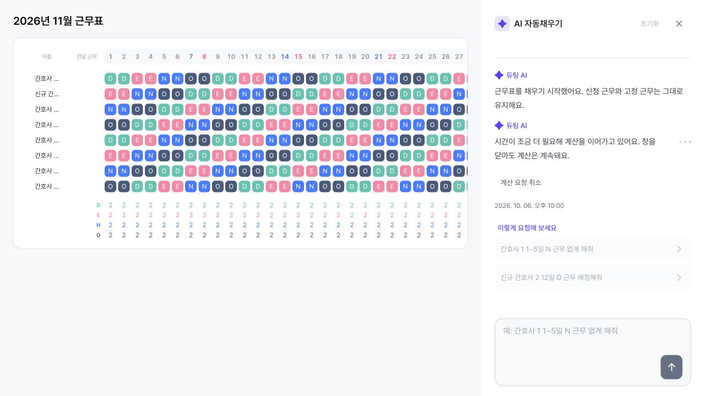
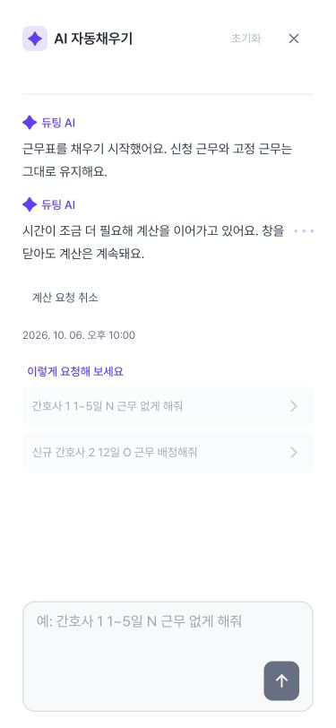
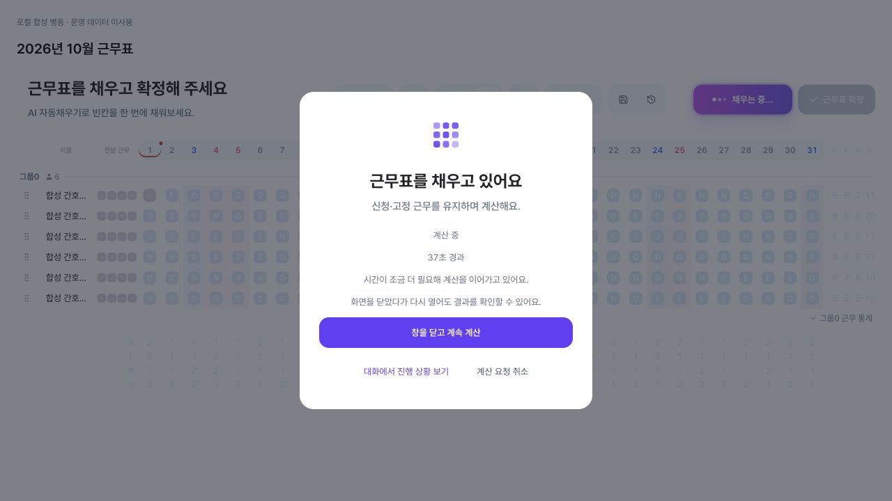
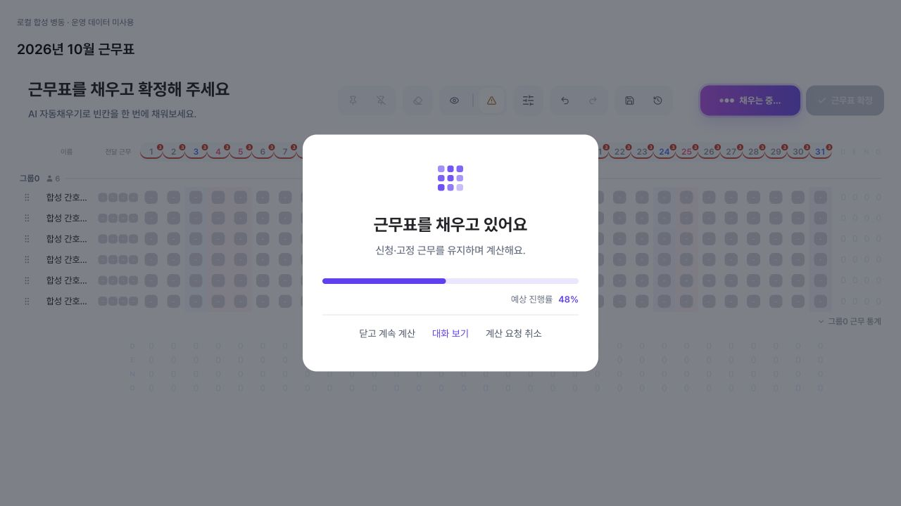
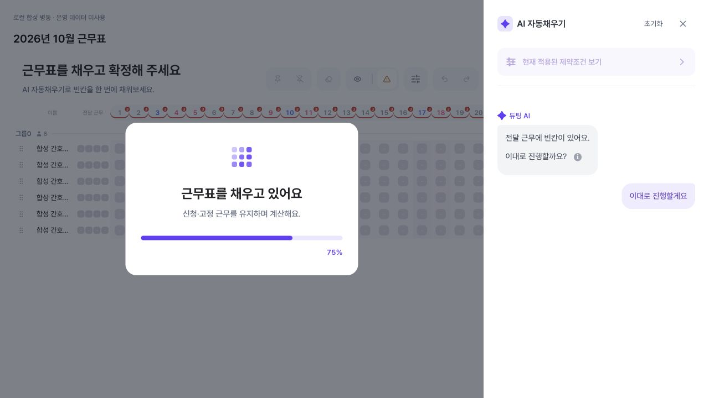
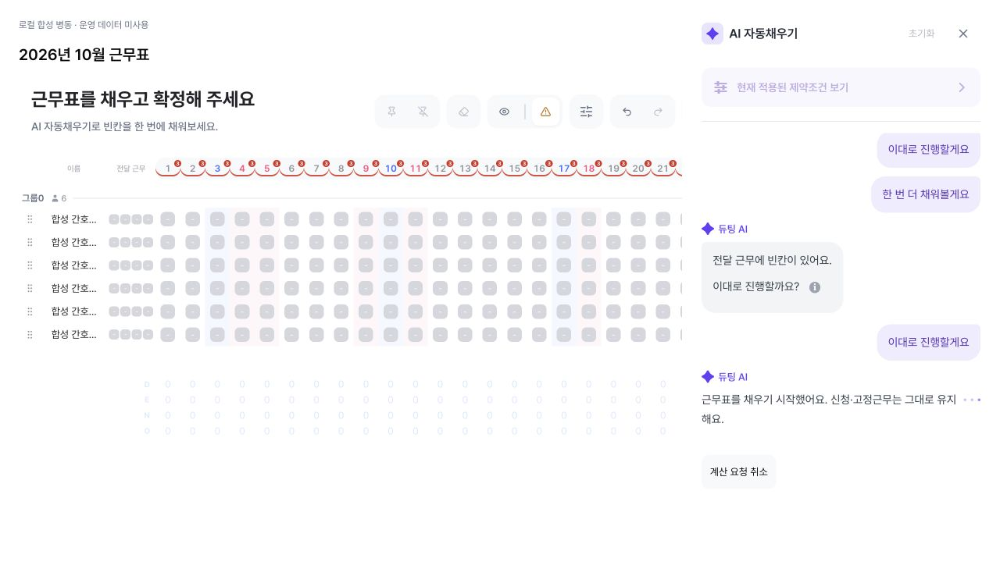
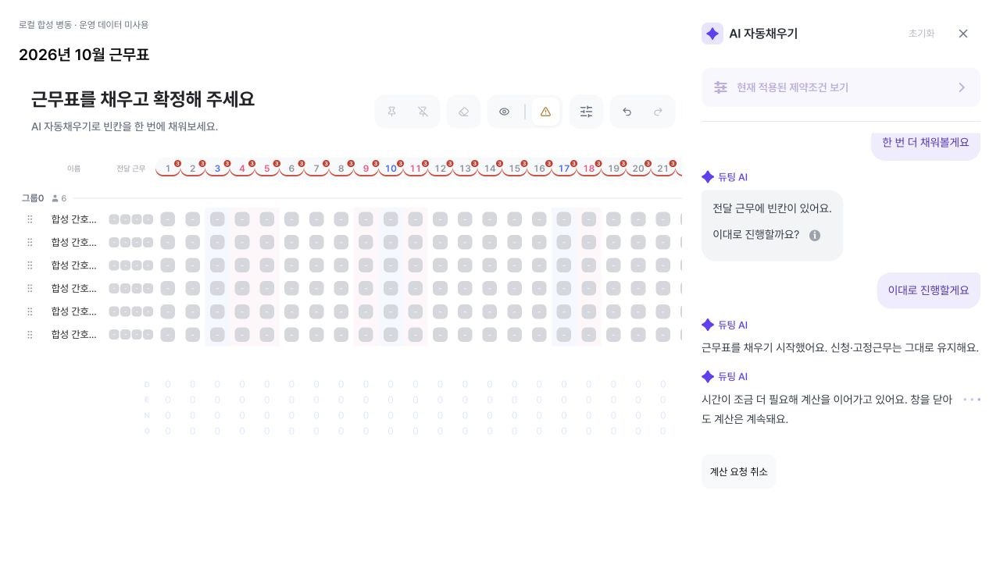
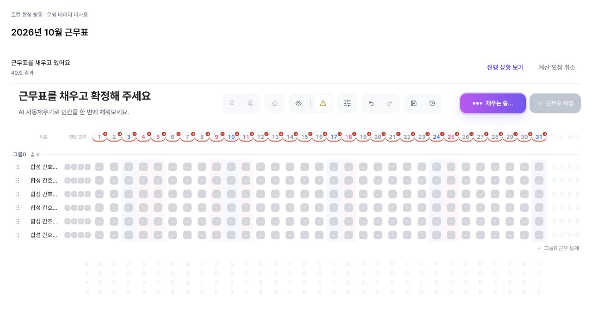
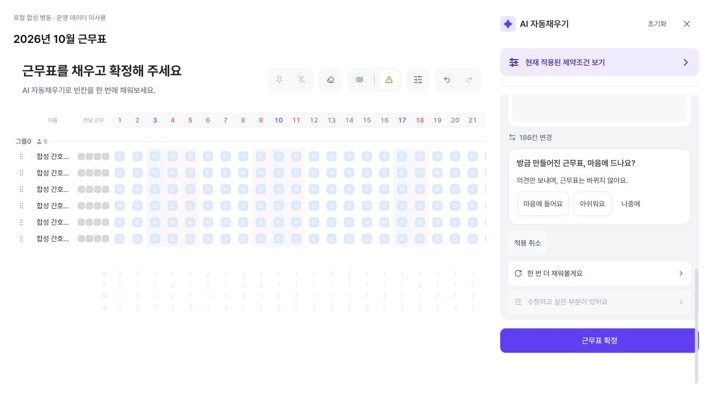
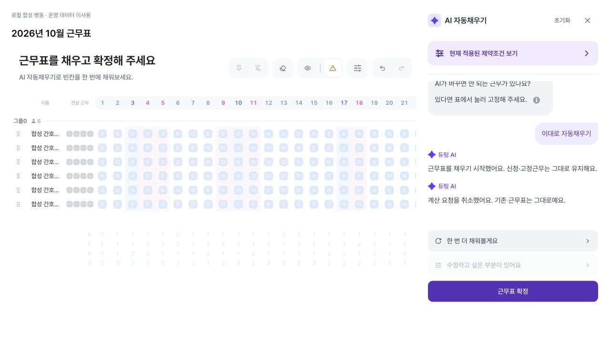

2026-10-30 · 최신 develop 통합 변경
진행 화면·용어를 현재 대화 기능과 통합
로딩창과 작업 표시의 재열기 동작을 진행 상황 보기로 통일했다. 기존 표를 바꾸는 작업은 근무표 수정, 보호되는 배치는 신청 근무 / 고정 근무로 표현한다. 첫 요청 입력·변경 내역·대화 시각·저장 결과 복구는 현재 develop 기능을 유지한다.
서버가 아직 작업 접수를 응답하지 않았어도 닫은 뒤 다시 열 수 있다. 서버가 취소 가능한 작업을 응답한 경우에만 취소 버튼을 제공한다. 구 서버의 기존 대기 시간을 유지한다.
범위: 이번 브라우저 점검은 합성 API를 쓰는 제품 컴포넌트 프리뷰다. 데스크톱 1280×720, 모바일 375×812에서 진행 대화와 44px 취소 버튼을 확인했다. 아래 10월 28일 HTTP 검증 이력과 구분한다.




최종 검증: 근무표 관련 95개 테스트 파일·1,249개 테스트, 타입 검사·빌드 통과. 기존 번들 크기 경고는 남아 있다.
백엔드 별도: Spring PR338과 Python PR158은 아직 열린 PR이다. 웹 develop 통합이 서버 배포·비동기 계약 활성화 완료를 뜻하지 않는다. 이번 변경은 운영 배포가 아니다.
2026-10-28 검증 이력
PRODUCT REVIEW · 2026-10-28 · 두 번째 UI 수정 / 운영 미배포
기존 로딩창 복원, 진행 안내는 하나씩 쌓이는 대화로
프론트 PR #162 · Draft · 실제 AiAutofill 부모 페이지 + 격리된 Spring/MySQL/Redis/FastAPI 연결
진행 막대·퍼센트를 없애고 큰 버튼과 안내문을 넣은 화면은 기존 로딩창 유지가 아니었다. 사이드바도 한 문장을 교체했으며, 별도 메시지를 하나씩 추가하지 않았다. 이번 수정은 원래 로딩 구조를 복원하고, 확인된 단계마다 이전 메시지를 보존하며 새 메시지를 추가한다.
1. 무엇을 고쳤나
| Before | After | Why |
|---|---|---|
| 진행 막대·% 대신 설명 문단과 큰 보라색 버튼. | 기존 흰 카드·격자 아이콘·제목·설명·진행 막대·%·완료 연출 복원. 하단에 작은 ‘닫고 계속 계산 / 대화 보기 / 계산 요청 취소’만 추가. | 기존 화면에서 최소 변경. %는 ‘예상 진행률’로 표시하고 실제 완료 전에는 100%가 되지 않음. |
| 추가된 안내문의 글꼴·크기가 달라짐. | 로딩 제목 24px·설명 15px, 기존 font-apple 스타일 유지. 대화 본문은 동일한 제품 글꼴의 14.5px·줄 간격 28px. | 브라우저 계산 스타일로 기존 크기와 실제 Pretendard 폰트 적용 확인. |
| 하나의 진행 문구를 교체. | ‘채우기 시작’ → 30초 후 ‘계산을 이어가는 중’ → 관측한 검증 단계 → 결과를 각각 별도 AI 메시지로 추가. 상자 배경 없음. | 앞선 설명을 읽으면서 진행을 따라갈 수 있음. 관측하지 못한 단계는 꾸며내지 않음. |
| 새 브라우저에서 editor init이 서버 기능 설정을 초기화해 이전 동기 경로로 진입 가능. | 에디터 초기화 완료 후 서버의 기능 설정을 적용. 서버가 끈 기능은 계속 꺼짐. | 처음 연 페이지에서도 백그라운드 경로 사용. true/false 회귀 테스트 추가. |
2. 로딩창 수정 전후
아래는 실제 제품 부모 페이지를 마운트한 로컬 합성 병동 화면이다. 전체 앱 내비게이션 셸이나 운영 URL 검증은 아니다. 이미지를 누르면 원본 크기로 볼 수 있다.


진행 막대·퍼센트를 없애고 문단과 큰 버튼을 추가했던 화면. 이번에 교체했다.


제목·설명·아이콘·진행 구조는 원래대로. 하단에 작은 동작 버튼만 추가했다. 중앙 로딩과 사이드바는 동시에 표시되지 않는다.
원래 로딩창 기준 화면 보기

원래 진행 막대와 % 구조의 기준. 이 화면에는 이전 중복 표시 문제도 남아 있다.
3. 대화는 한 번에 하나씩 추가


서버에서 계산 중 상태를 확인한 뒤 ‘근무표를 채우기 시작했어요’를 표시한다.


첫 메시지를 지우지 않고 ‘시간이 조금 더 필요해 계산을 이어가고 있어요’를 새 AI 메시지로 추가한다.
4. 닫기·결과·취소의 실제 동작


근무표 위 작업 표시에서 진행 상황 보기·취소에 접근한다. 중앙 가림막은 없다.


45초 지연 뒤 실제 계산 완료. 46.49초 SUCCEEDED/APPLIED, 186칸 변경 결과를 같은 대화에서 확인했다.


시작 메시지 뒤 취소 메시지를 추가한다. 9.00초 CANCELLED/NOT_APPLIED. 늦은 응답 뒤에도 기존 근무표 DOM 값이 동일했다.
5. 검증과 제한
- 이번 최종 회귀 테스트 323개 통과: 부모 페이지·생성/조절·로딩 114개, 사이드바·진행 대화 190개, 에디터 초기화 19개. 메시지 중복·역순 응답·다른 작업 분리·완료 후 보존·재마운트·취소 포함.
- 최종 TypeScript·ESLint·프로덕션 빌드 통과. 기존 번들 크기 경고는 남아 있다.
- 실제 페이지에서 닫기 → 동일 작업 재열기 → 취소, 닫은 상태에서 완료 → 결과 확인, 새로고침 후 진행·취소 메시지 보존을 확인했다.
- 45초 지연은 실제 계산 전에 테스트 미들웨어가 주었다. 이 화면 동선 검증은 솔버 CPU 속도나 모든 병동의 생성 성공률을 뜻하지 않는다. 외부 모델 호출과 운영 데이터 사용은 없다.
- 반복 QA 중 합성 병동의 사용량 제한이 정상 차단된 사례도 있었다. 이후 일회용 로컬 Redis의 해당 횟수 카운터만 초기화해 취소 경로를 검증했다. 운영 정책 변경 없음.
- 작은 화면은 이번 브라우저 검증 범위에 포함하지 않았다. 이전 QA에서 발견한 Python·Spring 검증 계약 불일치는 별도 미해결 사항이며 PR은 Draft 유지한다. 배포·병합하지 않았다.